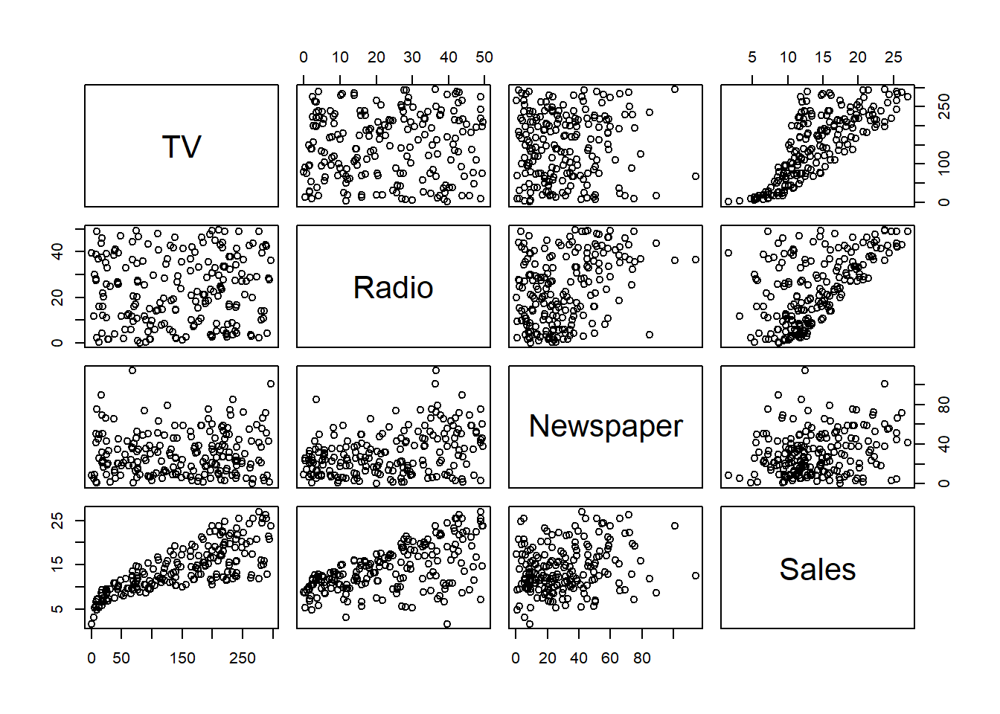
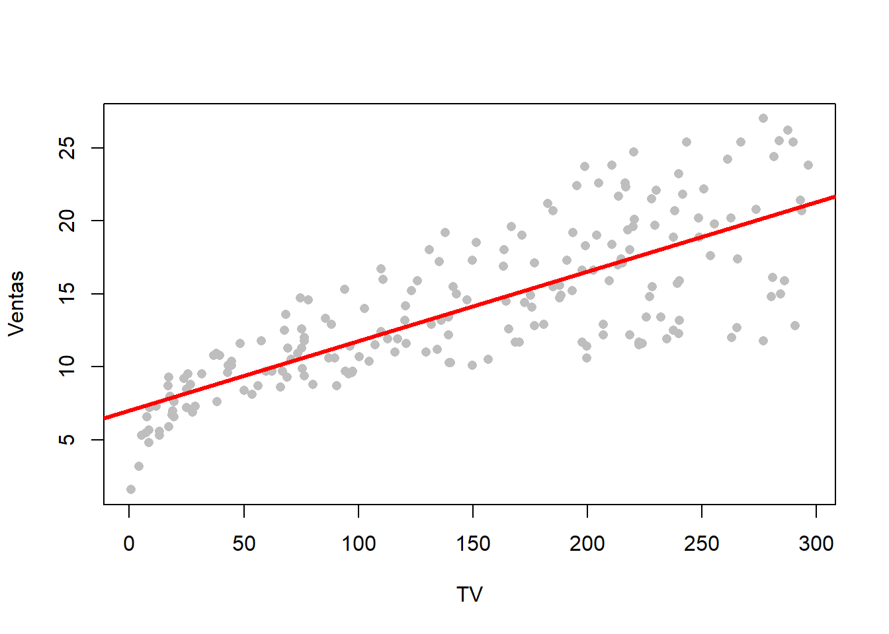
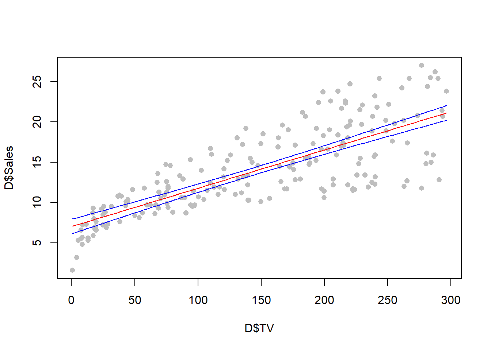
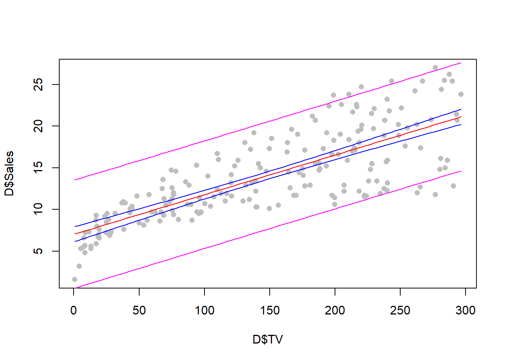
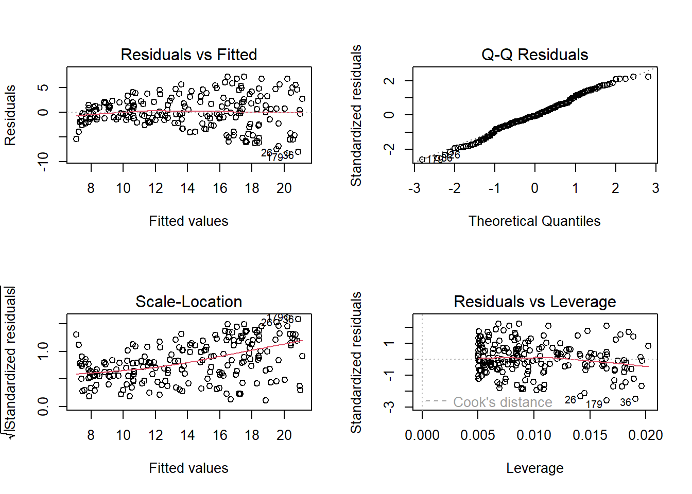

Suponga que tenemos dos variables cuantitativas, \(X\) y \(Y\). A \(Y\) se le conoce como variable respuesta y es la variable que queremos estudiar. A la variable \(X\) se le conoce como variable independiente, variable predictora o covariable, y es una variable que creemos que está relacionada con la variable \(Y\).
Un modelo de regresión lineal simple describe la relación entre una variable de interés \(Y\) y una variable predictora \(X\). Esta relación permite predecir el valor de \(Y\) si se conoce \(X\).
Lo primero que tenemos que hacer antes de comenzar a realziar un análisis de regresión es estudiar la relación entre la variable respuesta y las variables predictoras. Para esto usamos dos herramientas: gráficas de dispersión y medidas de correlación.
5.1 Ejemplo
Se tienen datos sobre la cantidad de ventas de un cierto producto y el dinero invertido en publicidad en tres medios: televisión, radio y periódicos.
'data.frame': 200 obs. of 5 variables:
$ X : int 1 2 3 4 5 6 7 8 9 10 ...
$ TV : num 230.1 44.5 17.2 151.5 180.8 ...
$ Radio : num 37.8 39.3 45.9 41.3 10.8 48.9 32.8 19.6 2.1 2.6 ...
$ Newspaper: num 69.2 45.1 69.3 58.5 58.4 75 23.5 11.6 1 21.2 ...
$ Sales : num 22.1 10.4 9.3 18.5 12.9 7.2 11.8 13.2 4.8 10.6 ...
pairs(D[, 2:5])

Las gráficas de dispersión muestra relaciones entra la variable respuesta Sales y las variables predictoras TV, Radio y Newspaper. Para entender mejor las relaciones, calculamos el coeficiente de correlación \(\rho\) de cada par de variables, el cual es un número entre -1 y 1 que indica el nivel de relación lineal entre dos variables. El coeficiente de correlación se interpreta como sigue:
Si \(\rho\) es muy cercano a 1, entonces la relación lineal es fuerte y positiva, es decir, cuando una variable crece, la otra variable también crece.
Si \(\rho\) es muy cercano a -1, entonces la relación lineal es fuerte, pero negativa, es decir, cuando una variable crece, la otra decrece.
Si \(\rho\) es cercano a 0, entonces las variables no están relacionadas linealmente. No obstante, esto no implica que las variables sean independientes, salvo cuando estas variables son normales.
El coeficiente de correlación de cada par de variables se puede mostrar en una matriz o en un mapa de calor. Los resultados para el dataset Advertising se muestran abajo y corrboran que las variables más relacionadas linealmente son SALES, TV y RADIO.
R =cor(D[, 2:5])print(R)
TV Radio Newspaper Sales
TV 1.00000000 0.05480866 0.05664787 0.7822244
Radio 0.05480866 1.00000000 0.35410375 0.5762226
Newspaper 0.05664787 0.35410375 1.00000000 0.2282990
Sales 0.78222442 0.57622257 0.22829903 1.0000000
Vamos a suponer que las variables \(X\) y \(Y\) están relacionadas por el modelo
\[ Y = \beta_0 + \beta_1 X + \epsilon,
\]
donde \(\beta_0\) y \(\beta_1\) se conocen como coeficientes de regesión, y \(\epsilon\) es un término de error aleatorio que sigue una distribución \(N(0, \sigma)\). Aquí, \(\beta_0\) respresenta el valor de \(Y\) cuando \(X=0\), el cual puede no tener sentido en algunos contextos. Más aún, \(\beta_1\) representa el cambio promedio en \(Y\) por cada unidad de cambio en \(X\).
Para implementar un modelo de regresión, necesitamos estimar los valores de los coeficientes de regresión. Para esto se utiliza un esquema de mínimos cuadrados, es decir, resolver el problema de optimización
\[ \min_{\beta_0, \beta_1}\sum_{i=1}^n (y_i - \hat{y}_i)^2,
\] donde \(\hat{y}_i = \beta_0 + \beta_1 x_i\) es el valor predicho del modelo, el cual depende de los coeficiente de regresión.
En R, usamos el comando lm para ajustar el modelo de regresión.
model =lm(Sales ~ TV, data = D)summary(model)
Call:
lm(formula = Sales ~ TV, data = D)
Residuals:
Min 1Q Median 3Q Max
-8.3860 -1.9545 -0.1913 2.0671 7.2124
Coefficients:
Estimate Std. Error t value Pr(>|t|)
(Intercept) 7.032594 0.457843 15.36 <2e-16 ***
TV 0.047537 0.002691 17.67 <2e-16 ***
---
Signif. codes: 0 '***' 0.001 '**' 0.01 '*' 0.05 '.' 0.1 ' ' 1
Residual standard error: 3.259 on 198 degrees of freedom
Multiple R-squared: 0.6119, Adjusted R-squared: 0.6099
F-statistic: 312.1 on 1 and 198 DF, p-value: < 2.2e-16
Podemos visualizar la recta de regresión.
plot(D$TV, D$Sales, pch =16, col ="gray", xlab ="TV", ylab ="Ventas")abline(a = model$coefficients[1],b = model$coefficients[2], col ="red",lwd =3)

Sabemos que los estimadores que obtuvimos para los coeficientes de regresión son dependientes de la muestra que tenemos. Podemo generar intervalos de confianza para evaluar su variabilidad muestral.
confint(model, level =0.99)
0.5 % 99.5 %
(Intercept) 5.84179567 8.22339143
TV 0.04053867 0.05453461
Podemos crear bandas de confianza para la recta de regresión.
x =seq(min(D$TV), max(D$TV), length.out =100)new.data =data.frame(TV = x)pred =predict(model, new.data, interval ="confidence")plot(D$TV, D$Sales, col ="gray", pch =16)lines(x, pred[, 1], col="red")lines(x, pred[, 2], col ="blue")lines(x, pred[, 3], col ="blue")

Podemos crear bandas de predicción que nos indiquen que pasaría para un sólo individuo, en lugar de con un promedio de individuos.
pred2 =predict(model, new.data, interval ="prediction")plot(D$TV, D$Sales, col ="gray", pch =16)lines(x, pred[, 1], col="red")lines(x, pred[, 2], col ="blue")lines(x, pred[, 3], col ="blue")lines(x, pred2[, 2], col ="magenta")lines(x, pred2[, 3], col ="magenta")

Para diagnosticar el modelo, podemos usar el coeficiente \(R^2\), el cual nos indica el porcentaje de variabilidad de los datos que es recuperado por el modelo. Entre más grande el valor de \(R^2\), mejor es el modelo. Hay que tener cuidado con la interpretación de este número ya que, al igual que el coeficiente de correlación, puede llegar a ser engañoso.
summary(model)
Call:
lm(formula = Sales ~ TV, data = D)
Residuals:
Min 1Q Median 3Q Max
-8.3860 -1.9545 -0.1913 2.0671 7.2124
Coefficients:
Estimate Std. Error t value Pr(>|t|)
(Intercept) 7.032594 0.457843 15.36 <2e-16 ***
TV 0.047537 0.002691 17.67 <2e-16 ***
---
Signif. codes: 0 '***' 0.001 '**' 0.01 '*' 0.05 '.' 0.1 ' ' 1
Residual standard error: 3.259 on 198 degrees of freedom
Multiple R-squared: 0.6119, Adjusted R-squared: 0.6099
F-statistic: 312.1 on 1 and 198 DF, p-value: < 2.2e-16
Podemos diagnosticar los supuestos de normalidad del modelo de regrsión a través de gráficas de residuales.
par(mfrow =c(2,2)) # divide al ventana gráfica en una matriz de dos renglones y dos columnasplot(model)

7 Modelo de regresión lineal multiple
Queremos describir una variable respuesta \(Y\) a partir de muchas varaibles predictoras \(X_1, X_2,...., X_k\). Para esto, usamos el siguiente modelo: \[ Y = \beta_0 + \beta_1 X_1 + \beta_2 X_2\ldots + \beta_k X_K + \epsilon,
\]
model2 =lm(Sales ~ TV + Radio + Newspaper, data = D)summary(model2)
Call:
lm(formula = Sales ~ TV + Radio + Newspaper, data = D)
Residuals:
Min 1Q Median 3Q Max
-8.8277 -0.8908 0.2418 1.1893 2.8292
Coefficients:
Estimate Std. Error t value Pr(>|t|)
(Intercept) 2.938889 0.311908 9.422 <2e-16 ***
TV 0.045765 0.001395 32.809 <2e-16 ***
Radio 0.188530 0.008611 21.893 <2e-16 ***
Newspaper -0.001037 0.005871 -0.177 0.86
---
Signif. codes: 0 '***' 0.001 '**' 0.01 '*' 0.05 '.' 0.1 ' ' 1
Residual standard error: 1.686 on 196 degrees of freedom
Multiple R-squared: 0.8972, Adjusted R-squared: 0.8956
F-statistic: 570.3 on 3 and 196 DF, p-value: < 2.2e-16
Aquí podemos diagnosticar el modelo con las gráficas de residuales.